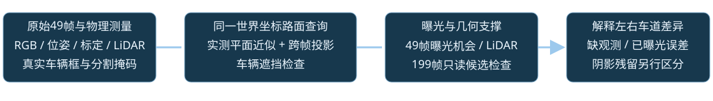
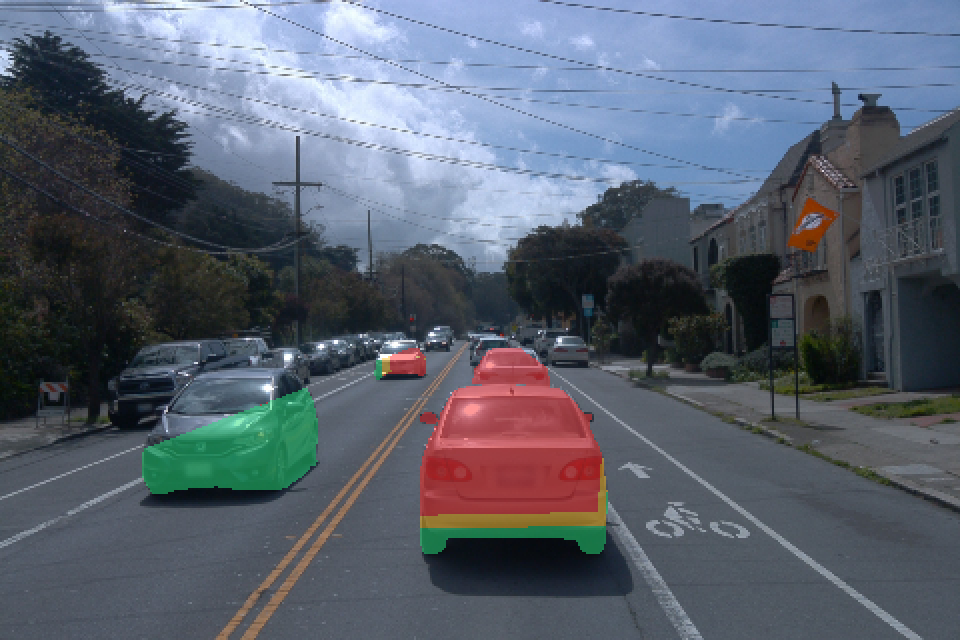
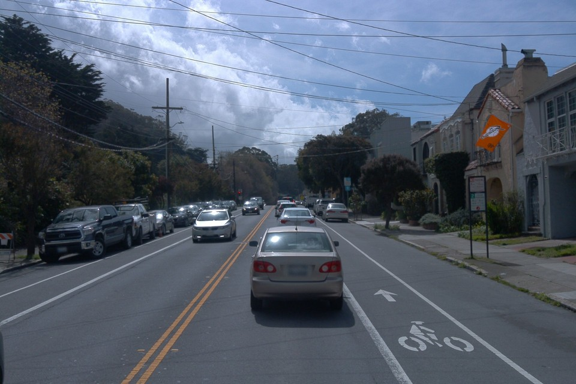
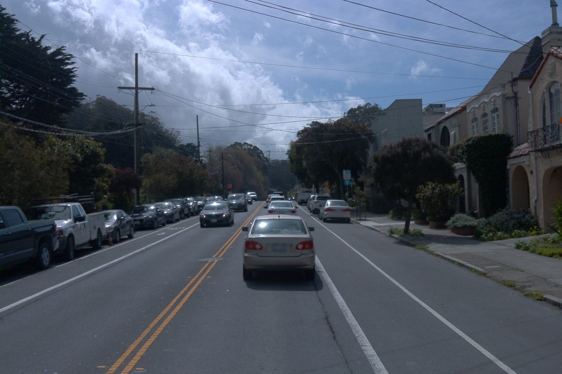
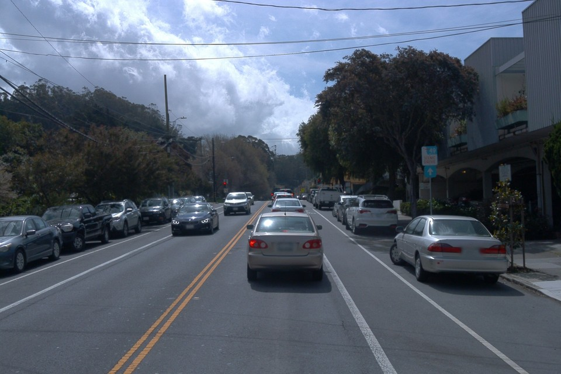

左右车道的差异：道路观测证据与分离问题
后续核查修订：本页证明左右背景观测差异，不能据此断言车身已从静态彻底分离。raw129重复解释审计确认：静态分支仍可随时间运动，速度正则约束衰减后的特征，静态body的直接RGB梯度为0。原判断低估了分离约束的漏洞。查看实际源码、参数与完整画面证据。
2026-10-19T02:44:30+08:00 · 只读CPU核查 · 训练更新0 · A/B输入及训练保持原样
实验状态 · 完整49帧同步视频 · 精简数值证据
修订判断：当前49帧中，自车道删车后背景受观测不足的限制远大于左侧近处车道。静态层有车形，并不能单凭外观判断为高斯身份错分。这些数据说明背景监督不足；它们没有验证静态与动态对车辆的排他分离。后续源码与参数审计已确认分离约束的漏洞，同时少数已有曝光机会的区域仍有明显误差，阴影也没有随车辆删除。
没有因果消融，无法给观测不足与静态重复解释排序或分配贡献百分比，也没有证明所有Gaussian归属正确。

1. 实际输入不是49个充分不同的视角
训练仅使用FRONT raw89—137，跨度4.800秒。自车累计移动2.04m；其中34/49帧距初始位置不足0.1m，整体相机基线仅2.02m。重复训练30K不能产生新视角。
| 车辆 | 实际所在侧 | 4.8秒内世界轨迹长度 | 身份mask有正像素 |
|---|
| a5 | 左侧对向车道 | 39.76 m | 24/49 |
| a26 | 左侧对向车道 | 42.09 m | 49/49 |
| a18 | 左侧对向车道 | 45.11 m | 49/49 |
| a6 | 自车道前方 | 15.97 m | 49/49 |
| a37 | 自车道前方 | 6.85 m | 49/49 |
左侧对向车辆驶过约40—45m，许多固定路面在车到达前已经可见。自车道近处a37只移动6.85m，a6后方路面又被a37等车遮挡，曝光机会少得多。不能只比较相同屏幕像素，以下均追踪同一世界坐标路面。
2. raw128：车身轮廓背后假定路面的曝光机会
把真实车身mask像素的射线与实测路面平面相交，在49帧里检查同一位置是否入镜、是否被车辆mask或实际3D框遮挡。只统计前方4—90m且位于交通路面带的有效交点；没有把车身当道路真值。
| 身份 | 有效路面查询／body像素 | 49帧始终无曝光机会 | 至少3帧曝光机会 | 曝光帧数中位数 |
|---|
| a26 | 3053/4619（66.1%） | 0.1% | 99.9% | 25 |
| a18 | 275/394（69.8%） | 74.9% | 11.6% | 0 |
| a6 | 571/601（95.0%） | 100.0% | 0.0% | 0 |
| a37 | 6631/6631（100.0%） | 78.5% | 10.7% | 0 |
a26是左侧近车；a18是左侧更远车辆，也被前车遮挡，因此“左侧全部可恢复”同样不成立。右侧a6与a37的可用观测明显更弱。mask外扩2像素后，a6/a37结论不变。

红：0帧；黄：1—2帧；绿：≥3帧。未着色的body像素未建立有效平面交点；不是已证实可见。颜色表示近似曝光机会，不是高斯owner。
3. LiDAR也没有自动补齐自车道的路面
另以各车raw128真实3D框的地面足迹采样，查询原始49帧LiDAR中平面附近、车辆框外的实测点。半径0.25m，统计不同源帧；它只说明物理几何支撑，不提供被遮挡路面RGB。
| 车底足迹 | 曝光机会帧数中位数 | 无实测LiDAR支撑的采样点 | LiDAR支撑源帧中位数 |
|---|
| a26 | 31 | 0.0% | 28.0 |
| a18 | 0 | 3.0% | 2.0 |
| a6 | 0 | 95.9% | 0.0 |
| a37 | 3 | 15.2% | 5.5 |
车底足迹与整个车身轮廓背后的路面查询是两种区域，分母不同，不能混用百分比。a37足迹后半部分露出的机会较多，而其车身轮廓背后的更远路面大部分仍被遮挡。
4. 49帧裁窗丢失了一部分原始长序列的候选观测
对原始199帧做了只读标定／位姿／真实车辆框射线检查，未将额外帧加入初始化、mask或训练。为可比性，本表两列都只用3D框检查。窗口外没有逐帧分割复核，因此是乐观的几何候选曝光上界，不是确认的干净道路真值。
| raw128车身背后路面 | 当前49帧：≥3次候选曝光 | 原始199帧：≥3次候选曝光 | 窗口外最佳单帧候选 |
|---|
| a26 | 99.9% | 99.9% | raw0（单帧覆盖99.9%） |
| a18 | 11.6% | 100.0% | raw197（单帧覆盖74.9%） |
| a6 | 0.0% | 63.0% | raw188（单帧覆盖46.1%） |
| a37 | 10.7% | 100.0% | raw143（单帧覆盖47.1%） |
“当前49帧没见过”不等于“整个原始数据从未见过”。a37的查询在长序列中都有至少3次几何候选；a6仍有35.2%查询连199帧都没有候选。后续应先复核这些真实观测，再决定是否需要补全，不能把未核对候选当成训练真值。
原始raw138，当前训练窗外，完整画面

原始raw160，当前训练窗外，完整画面

原始raw198，当前训练窗外，完整画面

5. 仍不能把全部残影归为缺少观测
在raw128至少有3次非车辆曝光机会的有效路面查询上，跨帧RGB中位数参考与静态输出的绝对RGB误差中位数：左侧a26为1.33/255，a37为78.33/255。参考只有近似平面配准，且a37多数只有3—6帧曝光，不是配对真值或算法通过／失败阈值；但它提示少量已曝光区域也没有被当前静态层可靠恢复。
另外，当前mask监督车身，并不把车辆投影阴影纳入删除目标。原生GN11静态外观会学习观测中的阴影，没有删车后重算物理阴影的通路。左侧保留黑影可以与车身分离成功同时发生，不能把黑影一概视为车辆几何未移除。
完整画面核对
完整观测

静态分支

动态集合

真实车底足迹对应的路面曝光机会

对当前A/B结论的影响
A/B继续原预算训练，额外原始帧只用于本次诊断。后续质量结论分开记录：已有真实背景观测却仍重建错的区域、当前49帧缺观测的区域、以及未去除的投影阴影。B扩大身份范围检验车辆分离覆盖；它仍使用同一49帧，无法自动解决自车道缺观测。
更有信息量的下一步是复核长序列候选路面／补充真实可见视角，再单独处理确实从未观测的补全问题。当前没有启动新训练或生成式补全。
审计边界与原始凭据
实测平面拟合RMSE 0.059m；路面非完全平面、标定与时间差、mask和车辆框误差均会影响数值。非车辆遮挡物未逐一射线检测，曝光机会不能等同于确认的路面GT。没有因果消融，无法宣称某因素占总误差的百分比。human_verdict=null。
完整足迹统计 · 完整轮廓与199帧统计 · 精简汇总